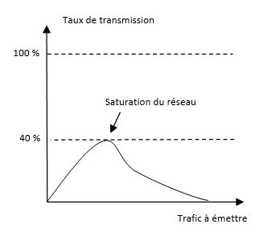

Key points
- Détection de collision Ethernet (CSMA/CD)
- Calcul temps d'émission de trames
- Collisions tardives
- Round trip delay
- Back off et réémission
Emission de trames
Le protocole Ethernet s'appuie sur l'algorithme d’émission de trames CSMA/CD (Carrier Sense Multiple Access with Collision Detect).
- Un poste doit vérifier que le support de communication est disponible avant d'émettre une trame
- Si deux (ou plusieurs) postes détectent que le support est disponible et émettent en même temps, les signaux électriques émis produiront une collision
- Les postes doivent donc vérifier l'état du support de communication pendant l'émission
- Si une collision est détectée les postes doivent cesser d’émettre et chacun attend un délai aléatoire différent avant de recommencer le processus d'émission de la trame
- En cas de collision, les postes concernées émettent sur le support de communication un signal de brouillage afin de s'assurer que les postes réalisent qu’une collision s’est effectivement produite
Comparaison émission et réception
La détection de collisions sur un réseau Ethernet impose à une carte réseau d'émettre et de recevoir simultanément pour pouvoir comparer les deux flux :
- Le flux émis, issu du codage de la trame sur le support de transmission.
- Le flux réellement présent sur le support de transmission.
La détection de collision se fait alors de la façon suivante :
- Si le flux réellement présent correspond au flux émis, il n'y a pas de collision.
- Si le flux réellement présent ne correspond pas au flux émis, il y a collision.
Une collision se traduit par une augmentation de l’amplitude des signaux électriques sur le support de communication ainsi que par le non-respect des règles du codage Manchester propre au protocole Ethernet.
Calcul temps d'émission
Le temps d'émission nécessaire au codage et à l'émission d'une trame se calcule de la façon suivante :
temps émission (s) = longueur trame (octets) * 8 (bits) / taux de transmission (Mb/s)
Point important, le temps d'émission dépend donc du taux de transmission de 10Mb/s ou 100Mb/s ou 1000Mb/s de la trame.
En prenant en compte la vitesse de propagation d'un signal électrique, il est possible d'en déduire une longueur de câble équivalente contenant toute la trame :
xCoefficient de correction de la vitesse de propagation de la lumière sur un câble cuivre = 0.77longueur câble (m) = vitesse lumière (m/s) * 0.77 * temps émission (s)
Période de détection de collisions
La détection de collisions peut commencer après avoir synchronisé les horloges des postes récepteurs sur l'émetteur, c'est à dire après la réception complète du préambule.
La détection de collisions s'arrête au plus tard lorsque la trame est complètement émise.
Une trame Ethernet contenant 10 octets de données comporterait 28 octets au total. Emise à un taux de transmission de 10Mb/s :
xxxxxxxxxxtemps émission (s) = 28 * 8 / 10 000 000 = 22.4 uslongueur câble (m) = 300 000 000 * 0.77 * 22.4 * 10-6= 5175 m

Collisions tardives
Si la distance séparant le poste d'émission et de réception dépasse la longueur équivalente d'une trame, il est possible qu'une collision tardive coté réception ne soit pas détectée par le poste d'émission.

Pour s'assurer dans tous les cas qu'une collision tardive coté réception soit détectée par le poste d'émission, il est nécessaire :
- De prendre en compte le cas le plus défavorable, c'est à dire lorsque la trame entre en collision juste avant d'arriver à destination.
- De tenir compte du temps de parcours inverse de la collision pour lui permettre d'être détecter par l'émetteur, soit l'équivalent du temps de l'aller.
Le cas échéant, l'émetteur considérera la trame correctement reçue et ne réémettra pas sa trame.
Ainsi, si une trame est trop petite, elle risque de ne pas être correctement transmise si la distance entre les deux postes dépasse la moitié de la longueur équivalente de la trame.
Round trip delay
Pour permettre aux postes connectés sur un même segment de réseau Ethernet d'être suffisamment éloignés et pour garantir le bon fonctionnement, la norme impose à une trame de ne pas être plus petite que 64 octets soit 512 bits, que l'on appelle bits time, unité utilisée pour être indépendant du taux de transmission.
En prenant une petite marge de sécurité, la norme impose un round trip delay d'un maximum de 510 bits time.
Pour un taux de transmission de 10Mb/s, la distance maximale séparant deux postes doit être inférieure à :
xxxxxxxxxxlongueur câble (m) = round trip delay (bits) / taux de transmission (Mb/s) * vitesse lumière (m/s) * 0.77 / 2 (aller retour)longueur câble max (m) = 510 / 10 000 000 * 300 000 000 * 0.77 / 2= 5890 m
Ainsi, plus le taux de transmission est élevé, plus la distance maximale pouvant séparer deux postes est faible. Les limites imposées au diamètre d'un segment pour un taux de transmission de 1000 Mb/s nécessitent de mettre en œuvre des commutateurs Ethernet en mode full duplex afin d'éviter les collisions sur des infrastructures où les normes de câblage permettent un éloignement des postes de 100 mètres.
Temps d'écoute
La détection de collisions peut cesser après une durée équivalente au temps d'émission de 64 octets. Au delà, aucune collision ne devrait plus se produire si la distance maximale séparant deux postes est respectée.
Il est essentiel de placer chaque émetteur dans les conditions requises afin d'identifier les collisions et retransmettre leur trame.
Compte tenu que le support de communication est partagé entre plusieurs postes, il est impossible d'identifier l'origine d'une collision lorsque la trame est complètement émise. La collision générant un signal brouillé, aucune information utile ne peut être extraite et il n'est pas possible d'identifier les postes concernés par la collision pour en demander la réémission.
Dans le cas d'une collision non détectée, la trame est considérée comme correctement transmise. Les informations sont alors perdues.
Back off et réémission
En cas de collision, l'émetteur cesse d'émettre sa trame mais le remplace par un signal de brouillage composé d'une série de 4 octets appelé jam. Il renforce ainsi la collision et permet à tous les postes connectés au segment de réseau de réaliser qu’une collision s’est effectivement produite.
Les postes à l'origine de la collision attendent avant de réémettre leur trame en respectant une durée définie aléatoirement pour chacun d'eux afin de réduire le risque de reproduire une nouvelle collision. Ce mécanisme est appelé back off.
Si une nouvelle collision se reproduit, cette durée est augmentée jusqu'à l'abandon de l'émission si le nombre de collisions successives atteint 16 tentatives pour une même trame.
Effondrement
Un nombre trop important de postes connectés sur un même segment de réseau Ethernet peut occasionner un effondrement du trafic en cas de surcharge. Le nombre de collisions devenant trop important, les trames en attente de transmission se multiplient et une congestion complète du réseau se produit brutalement.
L'efficacité d'un réseau Ethernet ne dépasse pas les 40% de la bande passante disponible.

Ce type de situation dépend :
- Du nombre de postes connectés (chaque poste est un candidat susceptible de transmettre des données)
- Du taux de transmission (un faible taux de transmission nécessitera davantage de temps pour acheminer une même quantité de données)
- De l'incidence de la quantité de trafic (le nombre de collisions augmente avec l'accroissement de la quantité de données)